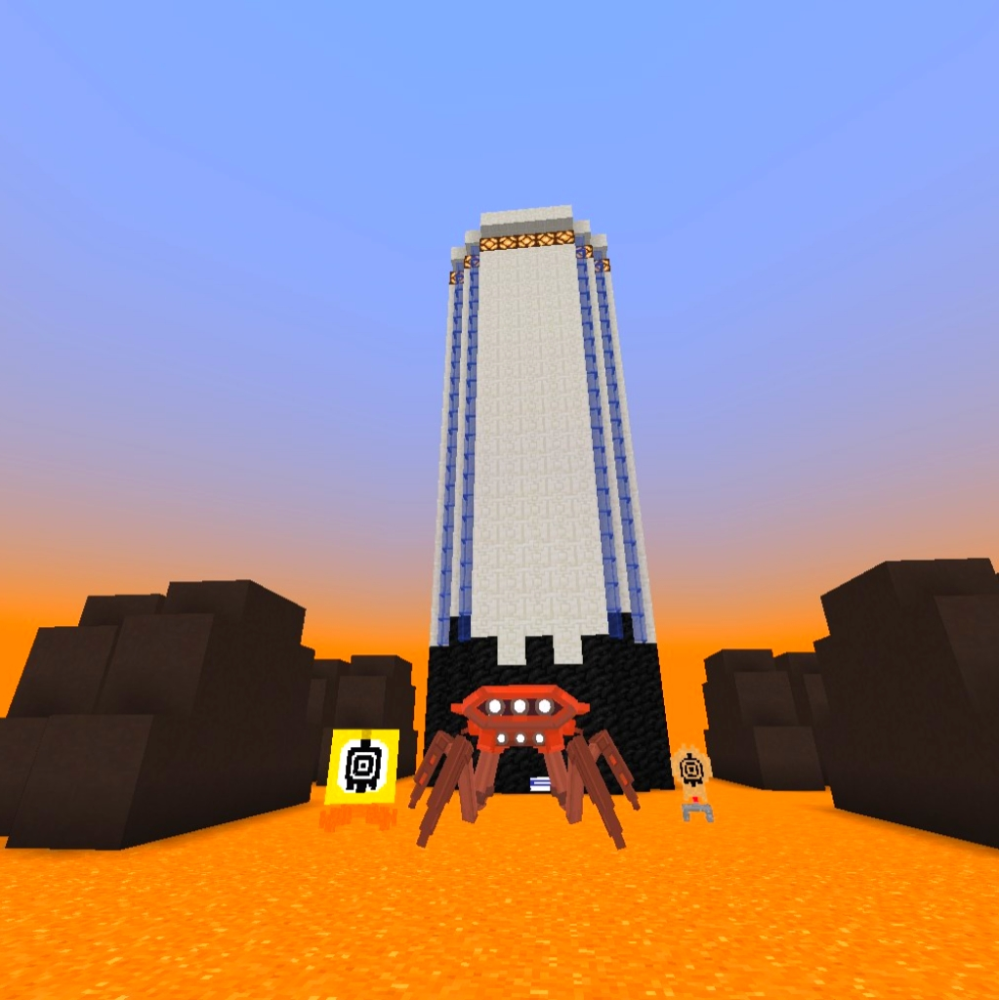
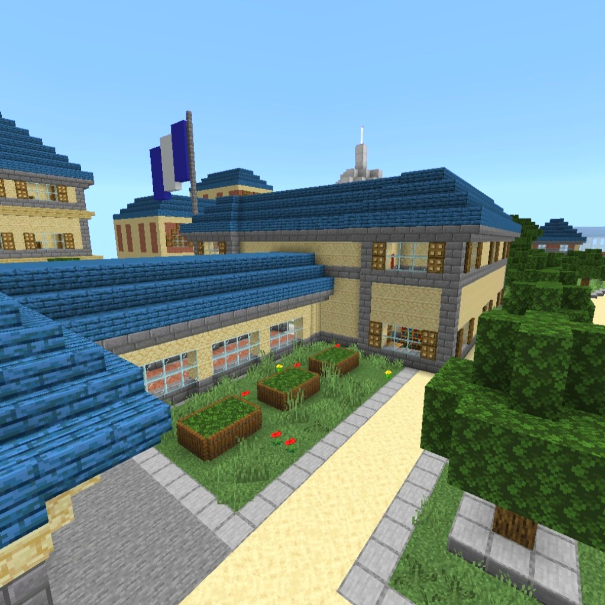
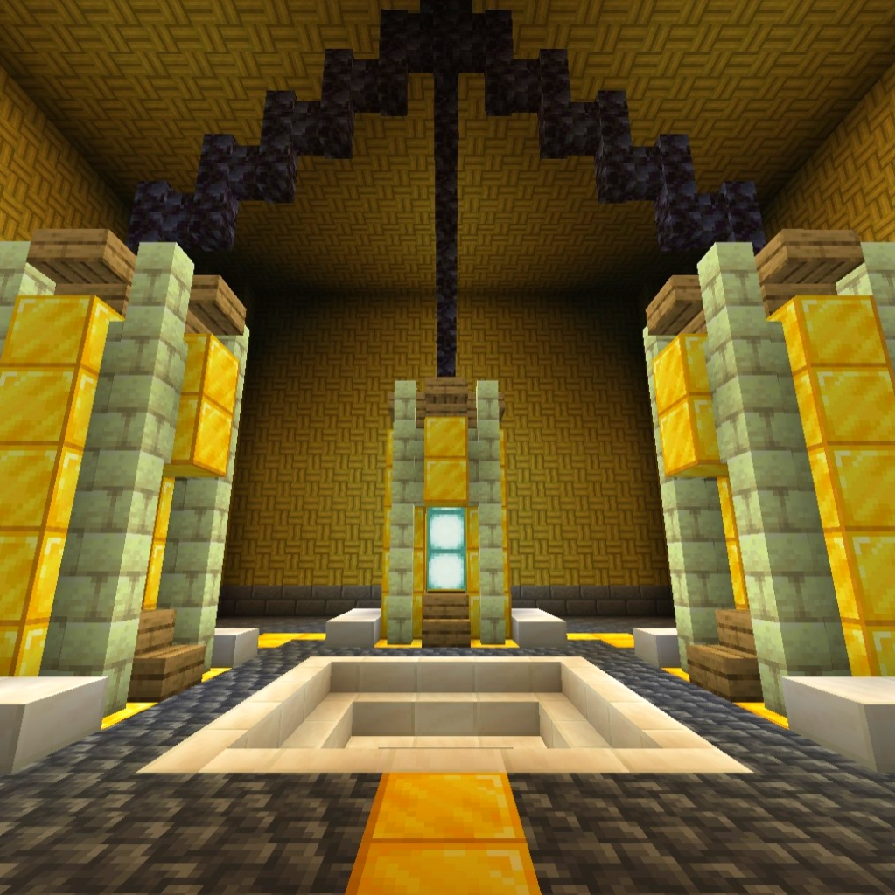

Xanedrock is both a Minecraft Bedrock world and server, designed to immerse you in the life of a Lyoko Warrior.
Attend Kadic Academy, meet new players, and follow your daily school routine… but don’t get caught skipping class, or you might end up in detention with Jim.

When X.A.N.A awakens, take control of the supercomputer, enter Lyoko, and stop its attacks before it escapes.

Watch Trailer Follow DevelopmentXanedrock is currently in active development.
The server is not public yet.